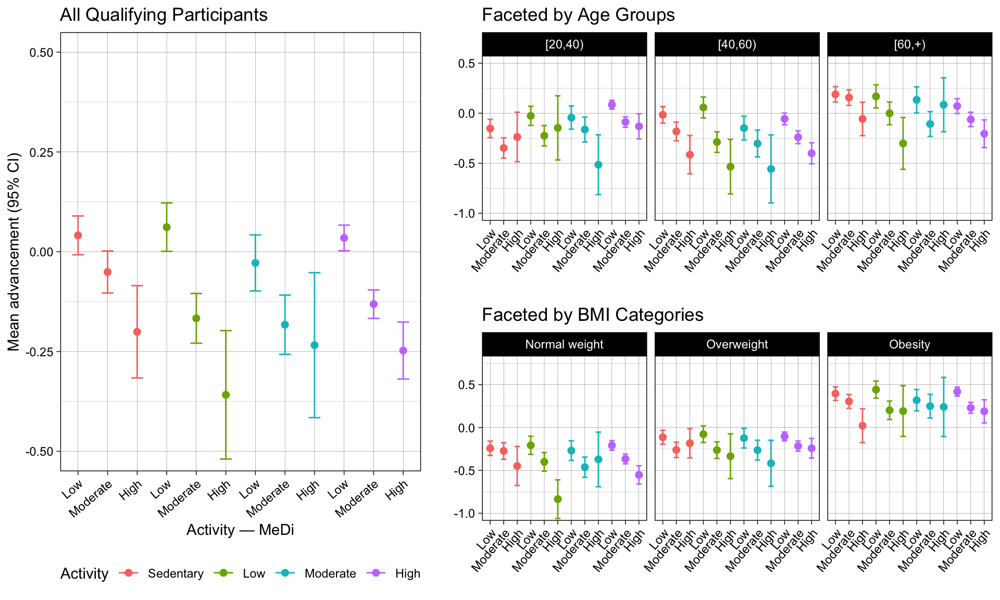

A common academic use case for AI-assisted coding is replicating published research. Some papers come with ready-to-run code that’s easy to pick up, while others leave you hunting for clues without any code at all. A complete A-Z replication would take more time than we have in this workshop, but the provided example shows how AI-assisted coding can help you expedite your replication process.
Undoubtedly, integrating AI into your workflows can quicken your process, but it also has the potential to create new headaches or amplify problems that arise when quality checks are skipped. As a data scientist or analyst, it’s essential to always scrutinize your data processing and cleaning methods to ensure accurate data preparation. For example, check that nomenclature is informative and consistent, confirm that NAs aren’t standing in for zeros (or vice versa), and verify that subsetting, grouping, or processing are performed in the right order to produce your expected outcome.
An AI is not going to be much help for you in this area—at least not reliably. You cannot expect it to completely or correctly identify all the data wrangling needed for a dataset, especially if your starting raw data is messy! Be especially careful when it suggests code that runs perfectly but doesn’t actually do what you need. It may even produce results that kind of look right, but after further quality checking, you might discover it missed or miscalculated something important.
The shrewd AI-assisted coder knows how to leverage AI’s strengths while catching its inevitable mistakes; remeber you are the brains of the operation, not the AI. Whether you’re coding with AI assistance or doing it alone, always take time to thoroughly review your data, prepare it into a complete tidy format, and run quality checks to verify your assumptions and calculations.
If you would like guidance on how to best prepare your data into a complete tidy format, review concepts of data wrangling, tidy data structures, and best practices for data inclusion and exclusion in our “Introduction to Programming in R and Data Wrangling with tidyverse” workshop.
Paper in Focus: Study Context, Data Description, and Replication Plan
Figure 2.c. from Thomas et al. (2023). Accessed from PubMed March 10th, 2025.
Thomas et al. investigated whether healthier lifestyle behaviors are associated with more favorable epigenetic markers of aging, drawing on the prevailing concensus that diet quality and physical activity are linked to reduced chronic disease risk and increased longevity. Aging is accompanied by measurable molecular changes, including increases in DNA methylation (DNAm), increased inflammation, and diminished cellular stress- and damage-response capacity 2,3. Rather than implementing a prospective longitudinal design, the authors adopted a cross-sectional strategy that estimates biological age via a machine-learning model trained to predict individuals’ biological age from epigenetic biomarkers measured at the time of assessment.
We do not attempt to evaluate the validity of the study’s design choices. For instance, it is not obvious that a single 24-hour dietary recall collected during an NHANES visit provides a reliable proxy for long-run dietary patterns. Consequentially, biomarker measurements taken at a single time point—without information on participants’ cumulative history of diet and physical activity—could plausibly bias estimated associations. Instead, our focus is narrower: we examine whether the age-stratified panels in Figure 3 might be influenced by compositional differences across age groups, such as uneven distributions of sex or BMI.
Data Source Considerations
This paper used the Continuous National Health and Nutrition Examination Survey (NHANES) dataset, which provides information on participants’ eating and exercise habits, anthropometric measurements, and lab results 4. The continuous series was launched in 1999 and has been conducted biennially since then. NHANES is a cross-sectional study that uses a stratified, multistage, probability-clustered sample of approximately 5,000 participants from 15 counties and includes sampling weights to generate nationally representative estimates 1,5,6. The authors applied the PhenoAge algorithm to predict participants’ biological age using the “Levine Original” formula (9 biomarkers) from the BioAge R package, which was trained on NHANES-III data (collected 1988–94): package paper and documentation7–9.
TipOther DSDE Data Resources
Our team puts together other resources for the Yale community and public health and epidemiological researchers at large. If you would like to learn more about NHANES and how to access the data, please review our webpage about this resource: Resource Navigation Tool - NHANES.
Based on the methods section, the paper implies the use of sample weights to generate national estimates. Weight selection varies depending on which data files you’re combining, and weighted datasets require survey-specific functions for analysis (e.g., svyglm instead of glm) 10–12. However, the BioAge R package doesn’t appear to use weighted NHANES-III data when training the PhenoAge model. For consistency and simplicity, we’ll skip the weights in this example and focus on participant-level results instead.
Warning
Minimal differences in sample size were observed between our pipeline and the paper up until the pre-calculated PhenoAge values were assessed. At that step, approximately 10,000 more participants were identified as having missing PhenoAge values than reported in the paper.
Data Dictionary
Understanding what each variable represents and its associated method specifics is essential. This publication draws on seven NHANES datasets that were combined to compile the data:
Data were accessed through the nhanesdata R package, which maintains a stable cloud storage of Continuous NHANES biennial datasets harmonized across cycles: package webpage and documentation20,21. The majority of data curation and processing has been handled prior to this example; the prepared dataset variables and details are listed below. The two dietary datasets are the only exception and will be processed here, with further details provided in that section. Additionally, pre-calculated PhenoAge projections estimated using NHANES-III have been merged into the Continuous NHANES data.
Pre-processed dataset variables:
seqn: Respondent sequence number
year: Year the participant was recorded
sddsrvyr: Continuous NHANES biennial survey cycle
ridageyr: Adjudicated age at screening in years
riagendr: Gender
ridreth1: Reported race and ethnicity
dmdeduc2: Education level for Adults 20+
dmdmartl: Marital status
indfmpir: Family poverty income ratio (PIR) - a ratio of family income to poverty threshold
ridexprg: Pregnancy status at exam
smoking_status: Current smoking behavior and history
bmi_category: Body mass index (BMI) categorized as: Normal, Overweight, or Obese
MET: Metabolic equivalent of task (MET) - calculated from moderate and vigorous physical activity tracking
activity_level: Classification of the MET score
avg_kcal: Total calories consumed during the 24-hour recall, averaged over two interview days
sd_kcal: Standard deviation associated with the two interview days
MeDi: Scale of Mediterranean diet adherence
phenoage_original: “Levine Original” formula using 9 biomarkers 7,9
phenoage_modified: “Modified Levine” formula using 12 biomarkers 7,9
advancement_original: “Levine Original” PhenoAge - Chronological Age
advancement_modified: “Modified Levine” PhenoAge - Chronological Age
Much of the data preparation has been conducted in the background so this example can remain focused on AI-assisted coding techniques. If you want to review the complete data processing steps, along with links to the full data dictionary associated with the NHANES datasets used, see “Code/Data Cleaning/Import and Compiling Continuous NHANES 1999 to 2018.R”.
Put It Into Practice
The following three exercises walk you through a pre-prepared guided analysis plan aimed at replicating figures from Thomas et al. Some steps can get complex, so rather than focusing on developing the analysis yourself, we encourage you to explore how different foundational models and AI agents respond to your prompts.
As you go through each exercise, keep these approaches in mind:
Move from broad to specific prompts, starting with something like “Generate ggplot2 code that will plot this screenshot of a figure from a paper” to something like “Plot df with x = activity_MeDi, y = mean_adv, and color = activity_level. Facet wrap over age_group and relabel the x-axis with rep(c("Low", "Moderate", "High"), times = 4).”
Solve the same problem using Yale’s AI Clarity chatbot and GitHub Copilot in Positron, then compare the results
Test different foundational models (i.e. GPT, Claude, Gemini) to see how each performs
Take a moment to discuss with your neighbor:
Were the prompts you used in Yale’s AI Clarity chatbot effective in the Positron Assistant, and vice versa?
Which tool needed more context to give useful responses?
At what point did your prompts become too vague for the Positron Assistant?
Do different models tend to answer questions similarly, or do their responses differ meaningfully?
How much back-and-forth was typically needed to fully solve a problem?
How often did you have to step in to troubleshoot something the AI couldn’t handle?
When asking the AI to explain code or provide analysis guidance, how relevant and accurate were its responses?
How often did you feel unequipped to judge whether a chatbot’s response was correct?
Mediterranean Diet Scoring
Our paper scored adherence to the Mediterranean Diet using the method developed by Trichopoulou et al. (1995 and 2003) 22,23. To calculate each participant’s score, individual 24-hour food recall records were used. Thomas et al. averaged across both assessment days, though in many cases only the first day was available 1,24. Food types were classified by NHANES using the USDA’s Food and Nutrient Database for Dietary Studies (FNDDS) encoding: Appendix B and Appendix H25,26.
The FNDDS encodings are already included and have been translated for Mediterranean Diet scoring according to Trichopoulou et al.
# Load the Mediterranean diet food group reference datamediterranean_groups <-read_csv(file ="https://raw.githubusercontent.com/ysph-dsde/Book-of-Workshops/refs/heads/main/Workshops/Code-Smarter-Not-Harder/Data/Mediterranean%20Diet%20Food%20Groups_Trichopoulou%20et%20al%202003.csv", show_col_types =FALSE,col_types =cols(code =col_character()))glimpse(mediterranean_groups)
To replicate the paper’s methods, process the data as follows to calculate the “MeDi” score:
For beneficial foods (vegetables, potatoes, fruits, legumes and nuts, fish, cereals), participants receive +1 point if their caloric intake meets or exceeds the median.
For detrimental foods (meat, poultry, dairy products), participants receive +1 point if their caloric intake is below the median.
For alcohol, +1 point is awarded for mild-to-moderate consumption (0–1 drink per day for females; 0–2 drinks per day for males). The National Institute on Alcohol Abuse and Alcoholism (NIAAA) defines one standard drink as 14 grams of pure alcohol 27.
For fats, particiants with a high monosaturated to saturated ratio receive +1 point if their caloric intake meets or exceeds the median.
Sex-specific medians are calculated for each food category as reference values. Alcohol and fat consumption is scored using different criteria.
To achieve this, we require three NHANES datasets: “Demographic Variables & Sample Weights (DEMO)” and “Dietary Interview - Individual Foods” for the first and second days.
# Load demographics datademo <-read_nhanes("demo")# Load dietary individual food data for day 1 and 2 and select the variables of # interest. Merge with demographics to get the gender of the participant.diet1 <-read_nhanes("dr1iff") |>select(seqn, dr1ifdcd, dr1ikcal, dr1iprot, dr1icarb, dr1isugr, dr1itfat, dr1imfat, dr1isfat, dr1icalc, dr1ialco) |>left_join(demo |>select(seqn, riagendr), by =c("seqn"))diet2 <-read_nhanes("dr2iff") |>select(seqn, dr2ifdcd, dr2ikcal, dr2iprot, dr2icarb, dr2isugr, dr2itfat, dr2imfat, dr2isfat, dr2icalc, dr2ialco) |>left_join(demo |>select(seqn, riagendr), by =c("seqn"))
Only the necessary variables are retained. The [1|2] notation reflects that this variable is uniquely defined in each of the two 24-hour recall survey days.
seqn: Respondent sequence number
dr[1|2]ifdcd: USDA eight digit food code
dr[1|2]ikcal: Energy (kcal)
dr[1|2]iprot: Protein (gm)
dr[1|2]icarb: Carbohydrate (gm)
dr[1|2]isugr: Total sugar (gm)
dr[1|2]itfat: Total fat (gm)
dr[1|2]imfat: Total monounsaturated fatty acids (gm)
dr[1|2]isfat: Total saturated fatty acids (gm)
dr[1|2]icalc: Calcium (mg)
dr[1|2]ialco: Alcohol (gm)
riagendr: Gender
The prepared analysis script outlines the steps needed to calculate each participant’s total MeDi score. Work through each step using the three approaches listed above to explore the AI’s capabilities, then compare your results with the pre-prepared solution.
Summary Statistics
In this section, we assess how unevenly participants are distributed across potentially confounding strata — age group, BMI category, and sex — since highly uneven distributions could overstate the influence of unrelated factors on PhenoAge advancement. Entries are then randomly tagged for filtering to balance counts across stratifications before plotting.
Necessary categorical groupings are defined for Age: [20,40), [40,60), [60,+) and MeDi score: Low (0–3), Moderate (4–5), High (6–9). Also, to reduce reliance on a successfully calculated MeDi score, a pre-prepared dataset is used for this and all subsequent analyses
Example
TipFor Those Without LLM Access
A few example responses are included for those who may lack access to an alternative LLM-based AI chatbot.
I asked Yale’s AI Clarity - ChatGPT 5.2:
“My data has a variable, ridageyr, that represents participants age on a continuous scale. I want to group the ages into”[20,40)“,”[40,60)“,”[60,+)“. Help me do this in R.”
This question used approximately 2,772 tokens. Tokens are the basic text units a model uses to process language — whole words, word parts, or punctuation — and in English, one token averages roughly 3–4 characters. Token counts matter because they determine context-length limits, factor into API billing, and generally affect processing and generation speed.
The model’s response for 296 tokens was:
You can do this cleanly with cut() (base R) or dplyr::case_when().
In the final section, we recreate the plot from Figure 2.c. and reorient the stratified plots from Figure 3 to allow for easier cross-group comparison. Each generated plot includes the following key components:
The x-axis represents the combined activity level and MeDi category variable.
The y-axis represents the mean advancement_modified_std per group, with error bars spanning the 95% confidence interval.
Points and error bars are colored according to activity level.
The resulting plots should look like this:

Example
TipFor Those Without LLM Access
Using a screenshot of Figure 2c from the paper, the following question was posed to Yale’s AI Clarity — ChatGPT 5.2:
“Using this screenshot, please outline the ggplot expression that would generate that image.”
This question used approximately 4368 tokens. The model’s response for 360 tokens was:
“Using the following table, make the plot use geom_point with a 95% confidence interval. The x-axis is activity_MeDi and the y-axus is advancement_modified_std while the plotted values are color coded by activity_level.”
#| message: FALSE#| warning: FALSE#| eval: falsedf |>select(activity_MeDi, activity_level, advancement_modified_std)# A tibble: 22,566 × 3 activity_MeDi activity_level advancement_modified_std<fct><fct><dbl>1 Moderate - Moderate Moderate -0.3952 Moderate - Low Moderate 0.2193 Low - Low Low -1.164 Moderate - Low Moderate 0.6865 High - Low High 0.1846 High - Low High -1.167 High - Low High 0.5258 Moderate - Moderate Moderate 0.04779 Moderate - High Moderate -1.7410 Low - Moderate Low -0.565
This question used approximately 4,048 tokens. The model’s 275-token response, along with the plot it’s suggested code generated, is shown below.
r
library(dplyr)library(ggplot2)# summarize to mean and 95% CI by x and color groupsum_df <- df |>group_by(activity_MeDi, activity_level) |>summarise(n =n(),mean =mean(advancement_modified_std, na.rm =TRUE),se =sd(advancement_modified_std, na.rm =TRUE) /sqrt(n),lwr = mean -1.96* se,upr = mean +1.96* se,.groups ="drop" )ggplot(sum_df, aes(x = activity_MeDi, y = mean, colour = activity_level)) +geom_hline(yintercept =0, colour ="grey85", linewidth =0.6) +geom_errorbar(aes(ymin = lwr, ymax = upr),width =0.15,position =position_dodge(width =0.5)) +geom_point(position =position_dodge(width =0.5), size =2.5) +labs(x ="activity_MeDi",y ="advancement_modified_std",colour ="activity_level" ) +theme_classic()
Centers for Disease Control and Prevention (CDC) & National Center for Health Statistics (NCHS). Datasets and documentation. National health and nutrition examination survey. https://wwwn.cdc.gov/nchs/nhanes/tutorials/Datasets.aspx.
6.
Centers for Disease Control and Prevention (CDC) & National Center for Health Statistics (NCHS). Guidelines for high quality analyses of NHANES data. National health and nutrition examination survey. https://wwwn.cdc.gov/nchs/nhanes/QualityAnalysesGuidelines.aspx (2026).